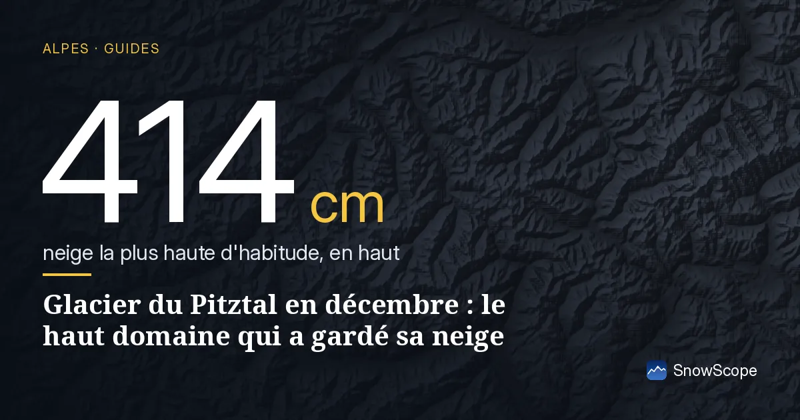

Glacier du Pitztal en décembre : le haut domaine qui a gardé sa neige
Le Pitztaler Gletscher sort du lot. Alors que beaucoup de stations alpines affichent une diminution de l'enneigement en décembre au cours des dernières décennies, ce glacier du Tyrol s'est maintenu ou amélioré : mi-hauteur est passé de 77 cm en moyenne dans les années 1980-90 à 85 cm ces 15 derniers hivers. Cette stabilité fait de décembre ici un pari rare qui en vaut la peine.
Consultez les prévisions neige en temps réel pour Pitztaler Gletscher sur l'application SnowScopeHauteurs de neige, alertes poudreuse et carte 3D, gratuitement.
Ce que le terrain glaciaire vous a apporté
L'altitude et la glace comptent. Le sommet du Pitztaler Gletscher culmine à 3 424 m, bien au-dessus de la limite pluie-neige en décembre. À cette altitude, chaque hiver de nos 46 années de relevés avait 30 cm ou plus à la mi-décembre, et 100 % en conservaient au moins 60 cm vers la semaine de Noël. La station mi-hauteur à 2 576 m montre le même bilan parfait : pas un hiver n'est tombé au-dessous de 30 cm la semaine du 15 au 21 décembre.
Un 15 décembre typique, la station mi-hauteur retient 87 cm et le sommet 171 cm. À Noël, la station mi-hauteur se situe autour de 92 cm. Dans 85 % des hivers, cette hauteur intermédiaire avait 60 cm ou plus vers la semaine de Noël—la zone de neige profonde, pas la zone où l'on racle.


La base : une histoire différente
La station de vallée à 1 728 m raconte une autre histoire. Un 15 décembre typique, elle a 32 cm—au-dessus du seuil de 30 cm, mais de justesse. Seulement 59 % des hivers atteignent 30 cm la semaine avant Noël à ce niveau, et le jour habituel pour trouver 30 cm au sol est le 10 décembre.
C'est important pour les familles ou les skieurs qui veulent se réchauffer à basse altitude. Le plan ici est de monter tôt et de skier depuis la mi-hauteur ou le sommet, puis de redescendre en remontée. Les rochers peuvent apparaître à la base début décembre. L'hiver dernier (2025–26) en est un exemple : le 15 décembre, il n'y avait que 16 cm à la base, bien que la station mi-hauteur en avait 50 cm.
Décembre cet hiver par rapport aux hivers passés
La tendance à long terme joue en votre faveur. L'ancien débat sur le fait que décembre devient plus ou moins enneigé ne s'applique pas ici. Au sommet, la moyenne de décembre est passée de 142 cm les 15 premiers hivers à 174 cm les 15 derniers. Même la base s'est améliorée : de 31 cm à 35 cm. C'est un coin des Alpes où le haut terrain englacé transforme encore l'humidité hivernale en neige, pas en pluie.
La semaine de Noël, chacun des 15 derniers hivers avait 30 cm ou plus à mi-hauteur. La part avec 30 cm à la base est passée de 60 % à 67 %. Ce n'est pas une garantie—aucune saison n'en est une—mais c'est aussi proche que décembre le devient dans les Alpes.
Tarifs et options de forfaits
La saison 2026-27 utilise des tarifs forfaitaires : 77 EUR pour un forfait journalier adulte, 410 EUR pour 6 jours. Aucune réduction pré-Noël n'existe, donc décembre n'est pas moins cher que janvier ou février. L'avantage, c'est la fiabilité de la neige, pas le prix.
Un bonus à exploiter : un forfait 2 jours ou plus inclut un jour au Kaunertal Glacier, à Winterberg Fendels ou au Hochzeiger sans frais supplémentaires. La zone Rifflsee, exploitée séparément, ouvre le 12 décembre 2026 si vous voulez une deuxième zone bon marché à proximité.
Comparaison : le Stubaier Gletscher à côté
Le Stubaier Gletscher, une vallée à l'est, a presque exactement la même neige mi-hauteur en décembre : 86 cm un 15 décembre typique et 100 % des hivers avec 30 cm la semaine avant Noël. Sa base est légèrement plus profonde à 40 cm. Stubai offre aussi un forfait 6 jours pour 355 EUR—environ 55 EUR moins cher que Pitztal.
L'avantage de Pitztal, c'est l'altitude. Avec son sommet à 3 424 m, il est 216 m plus haut que celui de Stubai à 3 208 m, ce qui signifie plus de terrain garanti au-dessus de la limite météo et une saison plus longue jusqu'au printemps. Si votre groupe est satisfait des pistes mi-hauteur, Stubai offre la même neige pour moins. Si vous voulez l'altitude maximale et le jour supplémentaire sur d'autres glaciers, Pitztal justifie le coût.
Quand réserver en décembre
Début décembre (1er au 7 décembre) offre 37 % de chances à la base et 100 % au sommet—un trajet montée et descente. Mi-décembre (8 au 14 décembre) est plus sûr : 50 % des hivers atteignent 30 cm à la base d'ici là. La semaine du 15 au 21 décembre est la bonne période : 59 % à la base, 100 % à mi-hauteur et au sommet. La semaine de Noël est le meilleur pari : 67 % des hivers ont 30 cm à la base et de la neige quasi certaine depuis la mi-hauteur vers le haut.
L'hiver dernier (2025–26) est un avertissement : même une saison faible a laissé 16 cm à la base le 15 décembre et 50 cm à mi-hauteur. Fin, mais pas dénudé. Si vous devez venir début décembre et ne pouvez pas adapter vos plans, demandez à la station des informations sur les enneigements artificiels sur les pistes basses.
Conseils aux skieurs
- Réservez un forfait 2 jours ou plus : le forfait inclut un jour gratuit au Kaunertal Glacier, à Winterberg Fendels ou au Hochzeiger. Utilisez-le pour vous couvrir en cas de mauvaise journée de neige.
- Skiez depuis la mi-hauteur (2 576 m) ou le sommet (3 424 m) début décembre et descendez en remontée ; la base peut avoir de la neige fine ou des plaques dénudées jusqu'à mi-mois.
- Décembre sur le glacier devient froid : à 3 424 m, attendez-vous à bien en dessous de zéro. Emportez des chaufferettes, une protection du visage et des lunettes adaptées à la lumière plate et au vent.
- Si vous voulez du hors-piste ou du ski de randonnée, consultez le bulletin Avalanche.report – Euregio Tyrol avant de partir, et engagez un guide local. Les crevasses des glaciers sont un danger toute l'année.
- Si le prix de Pitztal vous semble élevé et que votre groupe est satisfait mi-hauteur, comparez le Stubaier Gletscher : même profondeur de neige en décembre à mi-hauteur pour environ 55 EUR moins pour un forfait 6 jours.
À propos de ces chiffres
Les hauteurs de neige des stations sont la neige la plus épaisse sur le haut du domaine à la date indiquée ; ce sont des estimations pour une zone, pas une mesure en un point. Les prévisions peuvent changer. Consultez toujours le bulletin d'avalanche officiel avant le hors-piste.
Bulletins d'avalanche officiels: Avalanche.report – Euregio Tyrol
Citer ce bulletin
Pour la recherche, l'enseignement ou la presse : chiffres et graphiques réutilisables librement sous CC BY 4.0 avec cette citation.
SnowScope (2026), Glacier du Pitztal en décembre : le haut domaine qui a gardé sa neige, https://snowscope.app/blog/fr/2026/11/pitztal-glacier-december-ski-snow-sure-price.html, consulté le 2026-11-14
SnowScope (Atlas Labs). (2026, November 14). Glacier du Pitztal en décembre : le haut domaine qui a gardé sa neige. SnowScope snow reports. https://snowscope.app/blog/fr/2026/11/pitztal-glacier-december-ski-snow-sure-price.html
BibTeX
@misc{snowscope2026pitztalglacierdecembersk,
author = {{SnowScope (Atlas Labs)}},
title = {Glacier du Pitztal en décembre : le haut domaine qui a gardé sa neige},
year = {2026},
month = nov,
howpublished = {\url{https://snowscope.app/blog/fr/2026/11/pitztal-glacier-december-ski-snow-sure-price.html}},
note = {Published 2026-11-14 14:54 UTC; accessed 2026-11-14}
}· CC BY 4.0 · Méthodes, données et outils →
Pitztaler Gletscher : neige et température selon l'altitude, cet hiver vs l'hiver dernier (outils) →
Suivre Pitztaler Gletscher
Gratuit : un message quand la neige arrive, et la météo chaque matin.